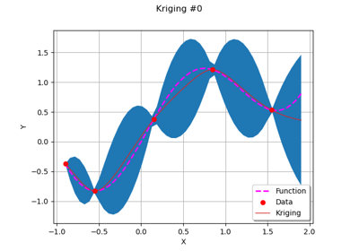

qNormal¶
- qNormal(*args)¶
Quantile of a unit-variance centered Normal distribution.
- Parameters:
- pfloat, in
![[0,1]]()
The probability.
- pfloat, in
- Returns:
- qfloat
The quantile of order
![p]() or
or ![(1-p)]() .
.
Notes
This method is based on Peter John Acklam’s algorithm, described in [acklam2017].
Examples
>>> import openturns as ot >>> q = ot.DistFunc.qNormal(0.95)
Examples using the function¶

Sequentially adding new points to a Kriging
Sequentially adding new points to a Kriging